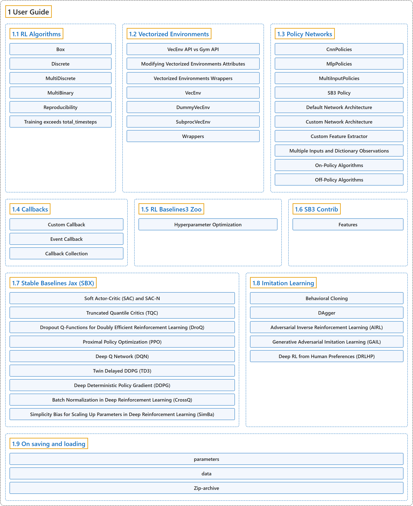

1. User Guide
Classification

Glossary
| Term | Definition | 中文翻译 | Source |
|---|---|---|---|
| 1 User Guide 用户指南 |
(No definition) | （无定义） | Raffin et al., n.d.-i, "User Guide", documentation menu |
| 1.1 RL Algorithms 强化学习算法 |
(context) "This table displays the RL algorithms that are implemented in the Stable Baselines3 project, along with some useful characteristics: support for discrete/continuous actions, multiprocessing." | （语境）此表列出 Stable Baselines3 项目中实现的强化学习算法，以及一些有用的特性：是否支持离散或连续动作、多进程。 | Raffin et al., n.d.-e, "RL Algorithms", para. 1 |
| 1.2 Vectorized Environments 向量化环境 |
"Vectorized Environments are a method for stacking multiple independent environments into a single environment." | 向量化环境是一种把多个独立环境堆叠成单个环境的方法。 | Raffin et al., n.d.-j, "Vectorized Environments", para. 1 |
| 1.3 Policy Networks 策略网络 |
(context) "Stable Baselines3 provides policy networks for images (CnnPolicies), other type of input features (MlpPolicies) and multiple different inputs (MultiInputPolicies)." | （语境）Stable Baselines3 提供面向图像（CnnPolicies）、其他类型输入特征（MlpPolicies）和多种不同输入（MultiInputPolicies）的策略网络。 | Raffin et al., n.d.-d, "Policy Networks", para. 1 |
| 1.4 Callbacks 回调 |
"A callback is a set of functions that will be called at given stages of the training procedure." | 回调是一组在训练过程的特定阶段被调用的函数。 | Raffin et al., n.d.-a, "Callbacks", para. 1 |
| 1.5 RL Baselines3 Zoo RL Baselines3 Zoo |
"RL Baselines3 Zoo is a training framework for Reinforcement Learning (RL)." | RL Baselines3 Zoo 是一个强化学习（RL）训练框架。 | Raffin et al., n.d.-f, "RL Baselines3 Zoo", para. 1 |
| 1.6 SB3 Contrib SB3 Contrib |
"We implement experimental features in a separate contrib repository: SB3-Contrib" | 我们在一个单独的 contrib 仓库中实现实验性功能：SB3-Contrib | Raffin et al., n.d.-g, "SB3 Contrib", para. 1 |
| 1.7 Stable Baselines Jax (SBX) Stable Baselines Jax（SBX） |
"Stable Baselines Jax (SBX) is a proof of concept version of Stable-Baselines3 in Jax." | Stable Baselines Jax（SBX）是用 Jax 实现的 Stable-Baselines3 概念验证版本。 | Raffin et al., n.d.-h, "Stable Baselines Jax (SBX)", para. 1 |
| 1.8 Imitation Learning 模仿学习 |
(context) "The imitation library implements imitation learning algorithms on top of Stable-Baselines3, including:" | （语境）imitation 库在 Stable-Baselines3 之上实现模仿学习算法，包括： | Raffin et al., n.d.-b, "Imitation Learning", para. 1 |
| 1.9 On saving and loading 保存与加载 |
(context) "Stable Baselines3 (SB3) stores both neural network parameters and algorithm-related parameters such as exploration schedule, number of environments and observation/action space." | （语境）Stable Baselines3（SB3）既保存神经网络参数，也保存与算法相关的参数，如探索计划、环境数量和观测/动作空间。 | Raffin et al., n.d.-c, "On saving and loading", para. 1 |
References
Raffin, A., Hill, A., Gleave, A., Kanervisto, A., Ernestus, M., & Dormann, N.. (n.d.-a). Callbacks. Stable-Baselines3 docs (Version 2.9.2a0). Retrieved October 31, 2026, from https://stable-baselines3.readthedocs.io/en/master/guide/callbacks.html
Raffin, A., Hill, A., Gleave, A., Kanervisto, A., Ernestus, M., & Dormann, N.. (n.d.-b). Imitation Learning. Stable-Baselines3 docs (Version 2.9.2a0). Retrieved October 31, 2026, from https://stable-baselines3.readthedocs.io/en/master/guide/imitation.html
Raffin, A., Hill, A., Gleave, A., Kanervisto, A., Ernestus, M., & Dormann, N.. (n.d.-c). On saving and loading. Stable-Baselines3 docs (Version 2.9.2a0). Retrieved October 31, 2026, from https://stable-baselines3.readthedocs.io/en/master/guide/save_format.html
Raffin, A., Hill, A., Gleave, A., Kanervisto, A., Ernestus, M., & Dormann, N.. (n.d.-d). Policy Networks. Stable-Baselines3 docs (Version 2.9.2a0). Retrieved October 31, 2026, from https://stable-baselines3.readthedocs.io/en/master/guide/custom_policy.html
Raffin, A., Hill, A., Gleave, A., Kanervisto, A., Ernestus, M., & Dormann, N.. (n.d.-e). RL Algorithms. Stable-Baselines3 docs (Version 2.9.2a0). Retrieved October 31, 2026, from https://stable-baselines3.readthedocs.io/en/master/guide/algos.html
Raffin, A., Hill, A., Gleave, A., Kanervisto, A., Ernestus, M., & Dormann, N.. (n.d.-f). RL Baselines3 Zoo. Stable-Baselines3 docs (Version 2.9.2a0). Retrieved October 31, 2026, from https://stable-baselines3.readthedocs.io/en/master/guide/rl_zoo.html
Raffin, A., Hill, A., Gleave, A., Kanervisto, A., Ernestus, M., & Dormann, N.. (n.d.-g). SB3 Contrib. Stable-Baselines3 docs (Version 2.9.2a0). Retrieved October 31, 2026, from https://stable-baselines3.readthedocs.io/en/master/guide/sb3_contrib.html
Raffin, A., Hill, A., Gleave, A., Kanervisto, A., Ernestus, M., & Dormann, N.. (n.d.-h). Stable Baselines Jax (SBX). Stable-Baselines3 docs (Version 2.9.2a0). Retrieved October 31, 2026, from https://stable-baselines3.readthedocs.io/en/master/guide/sbx.html
Raffin, A., Hill, A., Gleave, A., Kanervisto, A., Ernestus, M., & Dormann, N.. (n.d.-i). Stable-Baselines3 Docs - Reliable Reinforcement Learning Implementations. Stable-Baselines3 docs (Version 2.9.2a0). Retrieved October 31, 2026, from https://stable-baselines3.readthedocs.io/en/master/
Raffin, A., Hill, A., Gleave, A., Kanervisto, A., Ernestus, M., & Dormann, N.. (n.d.-j). Vectorized Environments. Stable-Baselines3 docs (Version 2.9.2a0). Retrieved October 31, 2026, from https://stable-baselines3.readthedocs.io/en/master/guide/vec_envs.html